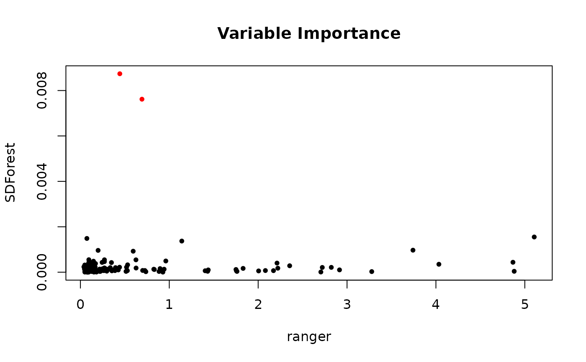
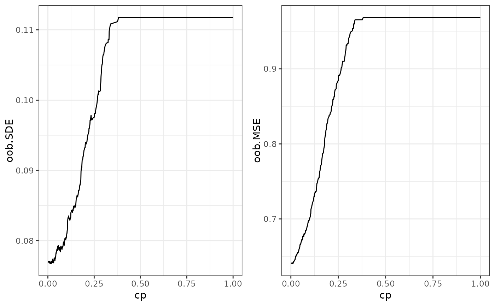
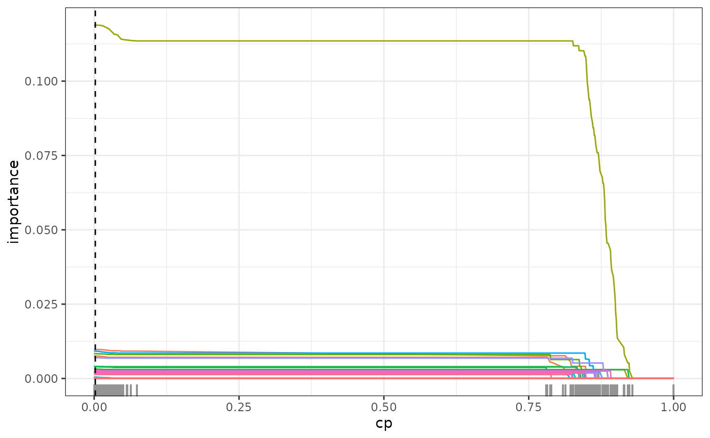
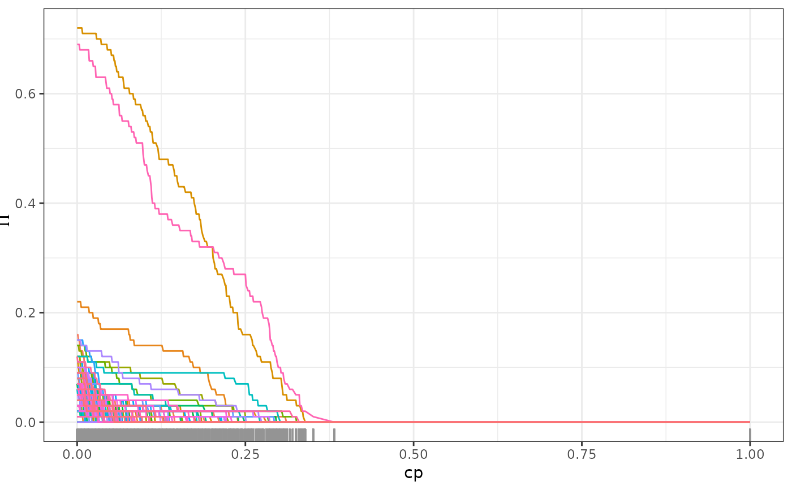
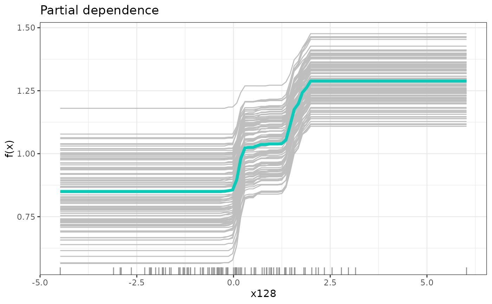

Spectral Deconfounded Random Forest
SDForest.RdEstimate regression Random Forest using spectral deconfounding. The spectral deconfounded Random Forest combines SDTrees in the same way, as in the original Random Forest (Breiman 2001) . The idea is to combine multiple regression trees into an ensemble in order to decrease variance and get a smooth function. Ensembles work best if the different models are independent of each other. To decorrelate the regression trees as much as possible from each other, we have two mechanisms. The first one is bagging (Breiman 1996) , where we train each regression tree on an independent bootstrap sample of the observations, e.g., we draw a random sample of size \(n\) with replacement from the observations. The second mechanic to decrease the correlation is that only a random subset of the covariates is available for each split. Before each split, we sample \(\text{mtry} \leq p\) from all the covariates and choose the one that reduces the loss the most only from those. $$\widehat{f(X)} = \frac{1}{N_{tree}} \sum_{t = 1}^{N_{tree}} SDTree_t^{boot}(X)$$
Usage
SDForest(
formula = NULL,
data = NULL,
x = NULL,
y = NULL,
nTree = 100,
cp = 0,
min_sample = 5,
mtry = NULL,
mc.cores = 1,
Q_type = "trim",
trim_quantile = 0.5,
q_hat = 0,
Q = NULL,
A = NULL,
gamma = 7,
max_size = NULL,
gpu = FALSE,
return_data = TRUE,
mem_size = 1e+07,
leave_out_ind = NULL,
envs = NULL,
leave_envs_out_trees = NULL,
envs_trees = NULL,
max_candidates = 100
)Arguments
- formula
Object of class
formulaor describing the model to fit of the formy ~ x1 + x2 + ...whereyis a numeric response andx1, x2, ...are vectors of covariates. Interactions are not supported.- data
Training data of class
data.framecontaining the variables in the model.- x
Predictor data, alternative to
formulaanddata.- y
Response vector, alternative to
formulaanddata.- nTree
Number of trees to grow.
- cp
Complexity parameter, minimum loss decrease to split a node. A split is only performed if the loss decrease is larger than
cp * initial_loss, whereinitial_lossis the loss of the initial estimate using only a stump.- min_sample
Minimum number of observations per leaf. A split is only performed if both resulting leaves have at least
min_sampleobservations.- mtry
Number of randomly selected covariates to consider for a split, if
NULLhalf of the covariates are available for each split. \(\text{mtry} = \lfloor \frac{p}{2} \rfloor\)- mc.cores
Number of cores to use for parallel processing, if
mc.cores > 1the trees are estimated in parallel.- Q_type
Type of deconfounding, one of 'trim', 'pca', 'no_deconfounding'. 'trim' corresponds to the Trim transform (Ćevid et al. 2020) as implemented in the Doubly debiased lasso (Guo et al. 2022) , 'pca' to the PCA transformation(Paul et al. 2008) . See
get_Q.- trim_quantile
Quantile for Trim transform, only needed for trim, see
get_Q.- q_hat
Assumed confounding dimension, only needed for pca, see
get_Q.- Q
Spectral transformation, if
NULLit is internally estimated usingget_Q.- A
Numerical Anchor of class
matrix. Seeget_W.- gamma
Strength of distributional robustness, \(\gamma \in [0, \infty]\). See
get_W.- max_size
Maximum number of observations used for a bootstrap sample. If
NULLn samples with replacement are drawn.- gpu
If
TRUE, the calculations are performed on the GPU. If it is properly set up.- return_data
If
TRUE, the training data is returned in the output. This is needed forprune.SDForest,regPath.SDForest, and formergeForest.- mem_size
Amount of split candidates that can be evaluated at once. This is a trade-off between memory and speed can be decreased if either the memory is not sufficient or the gpu is to small.
- leave_out_ind
Indices of observations that should not be used for training.
- envs
Vector of environments which can be used for stratified tree fitting. NOT SUPPORTED YET
- leave_envs_out_trees
Number of trees that should be estimated while leaving one of the environments out. Results in number of environments times number of trees. NOT SUPPORTED YET
- envs_trees
Number of trees that should be estimated for each environment. Results in number of environments times number of trees. NOT SUPPORTED YET
- max_candidates
Maximum number of split points that are proposed at each node for each covariate.
Value
Object of class SDForest containing:
- predictions
Vector of predictions for each observation.
- forest
List of SDTree objects.
- var_names
Names of the covariates.
- oob_loss
Out-of-bag loss. MSE
- oob_SDloss
Out-of-bag loss using the spectral transformation.
- var_importance
Variable importance.
- oob_ind
List of indices of trees that did not contain the observation in the training set.
- oob_predictions
Out-of-bag predictions.
If return_data is TRUE the following are also returned:
- X
Matrix of covariates.
- Y
Vector of responses.
- Q
Spectral transformation matrix.
References
Breiman L (1996).
“Bagging predictors.”
Machine Learning, 24(2), 123--140.
ISSN 0885-6125, doi:10.1007/BF00058655
.
Breiman L (2001).
“Random Forests.”
Machine Learning, 45(1), 5--32.
ISSN 08856125, doi:10.1023/A:1010933404324
.
Ćevid D, Bühlmann P, Meinshausen N (2020).
“Spectral Deconfounding via Perturbed Sparse Linear Models.”
J. Mach. Learn. Res., 21(1).
ISSN 1532-4435.
Guo Z, Ćevid D, Bühlmann P (2022).
“Doubly debiased lasso: High-dimensional inference under hidden confounding.”
The Annals of Statistics, 50(3).
ISSN 0090-5364, doi:10.1214/21-AOS2152
.
Paul D, Bair E, Hastie T, Tibshirani R (2008).
““Preconditioning” for feature selection and regression in high-dimensional problems.”
The Annals of Statistics, 36(4).
ISSN 0090-5364, doi:10.1214/009053607000000578
.
Examples
set.seed(42)
# simulation of confounded data
sim_data <- simulate_data_nonlinear(q = 2, p = 150, n = 100, m = 2)
X <- sim_data$X
Y <- sim_data$Y
train_data <- data.frame(X, Y)
# causal parents of y
sim_data$j
#> [1] 146 96
# comparison to classical random forest
fit_ranger <- ranger::ranger(Y ~ ., train_data, importance = 'impurity')
fit <- SDForest(x = X, y = Y, nTree = 10, Q_type = 'pca', q_hat = 2)
fit <- SDForest(Y ~ ., train_data)
fit
#> SDForest result
#>
#> Number of trees: 100
#> Number of covariates: 150
#> OOB loss: 0.63
#> OOB spectral loss: 0.05
# comparison of variable importance
imp_ranger <- fit_ranger$variable.importance
imp_sdf <- fit$var_importance
imp_col <- rep('black', length(imp_ranger))
imp_col[sim_data$j] <- 'red'
plot(imp_ranger, imp_sdf, col = imp_col, pch = 20,
xlab = 'ranger', ylab = 'SDForest',
main = 'Variable Importance')

# check regularization path of variable importance
path <- regPath(fit)
# out of bag error for different regularization
plotOOB(path)

plot(path)

# detection of causal parent using stability selection
stablePath <- stabilitySelection(fit)
plot(stablePath)

# pruning of forest according to optimal out-of-bag performance
fit <- prune(fit, cp = path$cp_min)
# partial functional dependence of y on the most important covariate
most_imp <- which.max(fit$var_importance)
dep <- partDependence(fit, most_imp)
plot(dep, n_examples = 100)
